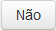
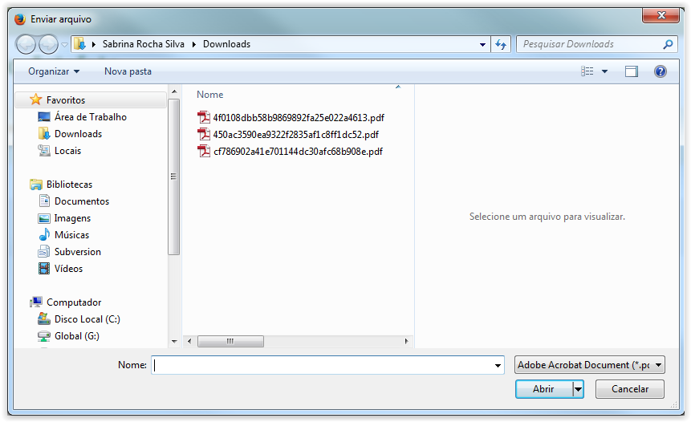
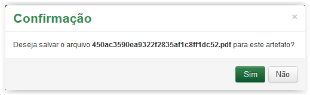
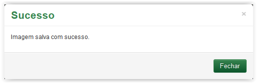

Corrigir artefatos
Após visualizar a imagem, se desejar confirmá-la clique no botão , situado na barra inferior da tela:
Barra de botões situado abaixo da imagem visualizada
Ao clicar no botão o sistema apresenta a mensagem de confirmação:
Mensagem de confirmação
Ao clicar no botão  o sistema retorna para a tela Imagem do Artefato. Ao clicar no botão o sistema apresenta uma mensagem de confirmação:
Após visualizar a imagem, se desejar alterá-la clique no botão , situado na barra inferior da tela:
Barra de botões situado abaixo da imagem visualizada
Ao clicar no botão a tela Imagem do Artefato é apresentada:

Tela Imagem do Artefato
Ao clicar no botão  o sistema retorna para a tela Área de Trabalho. No entanto, para inserir a imagem, clique no link indicado:
o sistema retorna para a tela Área de Trabalho. No entanto, para inserir a imagem, clique no link indicado:

Clicando no link para inserir imagem
A tela abaixo é apresentada para a seleção da imagem:

Procurando a imagem para ser adicionada
Selecione a imagem e clique no botão  :
:

Selecionando a imagem
Após clicar no botão é apresentada a imagem para visualização:

Imagem do documento adicionada
Utilize os botões  e
e  para visualizar a página anterior e posterior (quando o documento possuir mais de uma página) ou os botões
para visualizar a página anterior e posterior (quando o documento possuir mais de uma página) ou os botões  e para visualizar o grupo anterior e grupo posterior de páginas (quando o documento tiver muitas páginas). Além disso, verifique o total de páginas que o documento possui e qual página está selecionada para visualização por meio do botão
e para visualizar o grupo anterior e grupo posterior de páginas (quando o documento tiver muitas páginas). Além disso, verifique o total de páginas que o documento possui e qual página está selecionada para visualização por meio do botão  .
.
Para visualizar as páginas do documento com um "zoom" grande, clique em cada uma delas para que a página selecionada seja exibida logo abaixo dos botões .
Clique no botão , situado na barra inferior da tela. O sistema apresentará a mensagem abaixo:

Mensagem de confirmação
Ao clicar no botão  o sistema fecha a mensagem de confirmação e retorna para a tela Imagem do Artefato. No entanto, ao clicar no botão o sistema apresenta uma mensagem de sucesso:
o sistema fecha a mensagem de confirmação e retorna para a tela Imagem do Artefato. No entanto, ao clicar no botão o sistema apresenta uma mensagem de sucesso:

Mensagem de sucesso
Após clicar no botão o sistema retorna para a tela Área de Migração.
Created with the Personal Edition of HelpNDoc: Easy to use tool to create HTML Help files and Help web sites